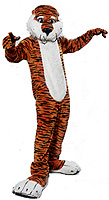

|

Other Auburn Traditions
Traditions at Auburn have always been cherished by students and alumni. Each generation of Auburn students borrows from the past to create their own experience, and in turn, lend to the future generations. Each of these lends to the spirit of Auburn.
A-Day
Each spring, a Founder’s Day celebration is held in Auburn. The football team plays in an exciting scrimmage called the A-Day Game, which attracts not only students, but alumni and Tiger fans from near and far.Aubie
 When there was a question whether the AU mascot should be an eagle or a tiger, artist Phil Neel answered that question by drawing the cartoon character, Aubie. A huge hit, Aubie graced the cover of home football programs from 1958-1976.When color photographs replaced Aubie on the program covers, Auburn student James Lloyd brought Aubie to life. Lloyd, the SGA director of Spirit, ordered a tiger costume and Aubie made his first appearance at a SEC basketball tournament with Lloyd in the suit. In 1979 Barry Mask was elected as the first official Aubie. His high antics and mischievous personality helped transform Aubie into the mascot we all love today.
Water skiing, parasailing, parachuting....this tiger does it all. Some of these endeavors, as well as his constant promotion of Auburn spirit, are why Aubie was selected as the #1 collegiate mascot in the entire nation in 1991, 1995, and 1996 by the Universal Cheerleaders Association.
Blood Drive
At the beginning of winter quarter the Auburn University SGA sponsors one of the biggest blood drives in the state. It lasts about five days and is the only one in the state at that time. The Red Cross depends heavily on Auburn after Christmas, when the demand for blood is high. Auburn holds the world record for the most pints given in one blood drive.Burn the Bulldogs
Every year before the Auburn-Georgia football game, spirits are high and enthusiasm is evident as students march in the Burn the Bulldogs Parade, carrying floats and shouting cheers. Sororities and fraternities build and carry a float throughout the parade, which ends with a pep rally and a bonfire where all the floats are burned.Cake Race
The annual Wilbur Hutsell-ODK Cake Race takes place in late fall and all are all encouraged to enter the 2.7 mile race across campus. The first 25 to finish receive a home-baked cake. While the first male to cross the finish line wins a kiss from Miss Auburn, the first female to cross the finish line wins a kiss from the top Auburn male “celebrity.” The race was established in 1928 by William Hutsell, the track coach at the time, to discover possible track team recruits in the freshman class. Women began participating in 1977.Camp War Eagle
Camp War Eagle has established itself as Auburn’s newest tradition. This high-energy program is Auburn’s summer orientation experience, and is the introduction to campus for many incoming freshmen. In winter, 35 students are selected and begin training for the job of Camp Counselor. Most people believe Camp War Eagle began in 1995, but in fact, a much smaller version of the program was held in 1994 at the 4-H Center in Columbiana. Just over 100 of Auburn’s incoming freshmen attended the first Camp War Eagle. Today the program serves over 3000 students each summer.Cheerleaders
 If the Auburn spirit could be personified, the cheerleaders would definitely be one of the groups exemplifying that spirit. The purpose of Auburn cheerleading is to promote that spirit by leading cheers and displaying positive leadership on and off the playing fields. The cheerleaders are also ambassadors for the university with Auburn’s students, faculty, alumni and any other people involved in conjunction with Auburn. Tryouts are held each spring.
If the Auburn spirit could be personified, the cheerleaders would definitely be one of the groups exemplifying that spirit. The purpose of Auburn cheerleading is to promote that spirit by leading cheers and displaying positive leadership on and off the playing fields. The cheerleaders are also ambassadors for the university with Auburn’s students, faculty, alumni and any other people involved in conjunction with Auburn. Tryouts are held each spring.
Concourse
If the weather permits, this brick walkway, located in front of Haley Center, is covered with a mixture of Auburn students. Typical events that can be seen on the Concourse are people studying, playing hakky sack or simply enjoying a sunny Auburn day.Fine Arts Week
A joint effort between the Architecture, Industrial Design, Art and Music departments, Fine Arts Week is a celebration held every spring to increase local and campus awareness of the arts. It is also a chance for students to showcase their work and help raise scholarship money. Activities include everything from concerts in Dudley courtyard to pie throwing. Architecture students perform teacher impersonations, and the art department hosts “Color the Courtyard,” during which local schoolchildren are invited to come decorate butcher paper with tempera paints in the courtyard. Each day has a different emphasis, and events are held within each department. The highlight of the week is the Beaux Arts Ball, when all students and professors assemble to celebrate.Greek Fest
This special week of activities is held every spring and is sponsored by Panhellenic and the Interfraternity Council (IFC). Fun events — such as a carnival for kids — are held along with educational sessions and speakers and a banquet recognizing scholastic achievement among the sororities and fraternities. The focus of the week centers on raising money for the Leukemia Society.Hey Day
On January 29, 1985, Auburn reinstated an annual tradition of the fifties and sixties called “Hey Day,” a day on which all students wear name tags and say “hey” to everyone they pass. Leaders on campus join forces and pass out name tags to revive this tradition and prove that Auburn University has the friendliest campus around.Homecoming
Besides being a time for the alumni, Homecoming, during fall quarter, is a great time for the students. Spirit is high with events including a parade, the big game on Saturday, painted signs and windows, election of Miss Homecoming and band parties. In addition, the University Program Council brings events to celebrate the week. Past events include an outdoor cartoonist, hypnotists, fireworks and lawn dances on the Student Activities Lawn.Pep Rallies
That Auburn spirit is legendary, and nowhere is it more evident than at the rousing pep rallies before our games. Whether they’re rolling along at Toomer’s Corner, Graves Amphitheater or Jordan-Hare, or Student Activities Center, there’s always an enthusiastic crowd to cheer. They watch the dance team, yell with the cheerleaders and see who can scream the loudest in the spirit point competition. Aubie performs at all pep rallies, and the band provides the music to get the crowd going. The orange and blue crowds gather for a roaring “War Eagle” anytime and anyplace, from a regular rally to the “Burn the Bulldogs” parade to the “Beat Bama” pep rally.The Seal
 The Auburn University seal is the official symbol used by the administration. In 1932, Auburn, then called Alabama Polytechnic Institute, adopted its fifth official school seal. In 1960, when the name changed to Auburn University, the words Alabama Polytechnic Institute were removed from the outer border of the seal and replaced with the new name.
The Auburn University seal is the official symbol used by the administration. In 1932, Auburn, then called Alabama Polytechnic Institute, adopted its fifth official school seal. In 1960, when the name changed to Auburn University, the words Alabama Polytechnic Institute were removed from the outer border of the seal and replaced with the new name.
The seal used today has the motto “For the Advancement of Science and Arts” with the date of Auburn’s founding and lamp representing knowledge, as its central members. “Research, Extension, and Instruction” surround the members of an inner banner, and represent the three main functions of the University. “Auburn University” and laurel boughs, signifying achievement, fill the outer border.
Splash into Spring
UPC Splash into Spring is a week-long tradition that celebrates the different aspects of springtime — sun, fun and relaxation! Events include a Beach Day with free ice cream and volleyball. There are also bed races, tye dying, the Jell-O Splash and big wheel races. Big events include comedians, outdoor movies, cookouts, the circus and the week-ending finale Jazz Fest.The Jazz Fest has featured per-formers such as Branford Marsalis and Ramsey Lewis. Splash Into Spring guarantees a week of fun for all Auburn students!
Step Shows
Several times a year competitions are held between National Pan-Hellenic Council fraternities and sororities in the art of stepping, a traditional form of dance and song among member groups. An individual chapter or person may sponsor the competition, which is an entertaining and fun performance as well as an educational experience. Step Shows are held at various times of the year, including Homecoming, and all proceeds raised at these performances are given to charity.Step Sing
A larger version of a step show, Step Sing is a biennial tradition among sororities and fraternities. The words “Practice makes perfect — start from the beginning — again!” can be heard during winter quarter as sororities and fraternities prepare to compete in Step Sing. Panhellenic, the council of all sororities, sponsors the event, which is held every other year during winter quarter.
Toomer's Corner
If you are passing through the intersection between Toomer’s Drug Store and the University campus, don’t be surprised to see toilet paper everywhere! Fans rolling Toomer’s Corner after an Auburn victory has long been a tradition for students and townspeople alike. The festivity is one more way for loyal Auburn fans to express their enthusiasm and spirit for the “Loveliest Village on the Plains.”
|
© 2000 Auburn Network, Inc |
Last updated Friday, 10-Dec-1999 11:33:27 CST